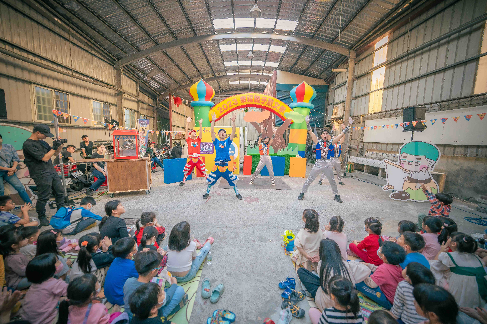

「文潔姐姐
魔法劇場」
議員 張文潔
競選形象提升與親子藝文巡演提案書
壹、 劇團介紹
ABOUT MR. YES CIRCUS TROUPE
🎭 關於 Mr. YES 小丑劇團
2019年劇團作品關注育兒以及感統發展等知識，嘗試利用創作跟育兒相關議題和觀眾對話，讓『親子』與『馬戲』兩個詞彙緊密的相連在一起。從夫妻育兒作品『森林幻想曲』到幼兒認知『三隻青蛙』我們的作品如同一顆純真的心隨著不斷提問持續成長。
專業馬戲特技
獨輪車、雜耍拋接、肢體平衡等高難度特技，視覺震撼力十足，秒速吸引人潮駐足。
議題融合劇場
將環境保育、兩性平權、防範霸凌等社會議題，以孩童易懂的故事敘事融入演出，達到品格教育的目的。
高互動主持設計
全程互動式流程設計，引導台下親子即時參與，每場凝聚 150–300 人共同投入冒險旅程，現場氣氛熱烈。
社區深根巡演模式
採機動性戶外演出規格，場地限制低，可於公園、廣場、學校禮堂快速佈置，彈性配合里別排程。
貳、 演出卡司與劇團陣容
CAST & PRODUCTION TEAM參、 社區巡演規劃與單場流程
EVENT SCHEDULE & RUN SHEET活動地點規劃於各公園綠地、學校禮堂、社區活動中心。單場時間長度為 75 分鐘，流程結構如下：
【序幕】童話嘉年華開場舞
熱烈吸睛劇團演員身穿華麗角色服裝，以迪士尼般歡樂活潑的嘉年華舞蹈與律動開場，迅速聚集公園及周邊的人群。【議員互動設計】 張文潔議員化身「童話守護者」以精緻造型驚喜出場，與演員一同跳段簡單手勢舞，並親切帶動台下小朋友。
【暖身】文潔姐姐悄悄話
溫馨交流張文潔議員簡短致詞（非傳統選舉口號，而是以關心孩子教育與社區生活的親民角度出發）。宣布「小小公民冒險集章計畫」正式啟動，點燃孩子們的挑戰熱情。
【正戲】互動式社會議題劇場
寓教於樂劇團演出原創故事，將社會核心議題（環境保育、兩性平權、校園霸凌防範）精緻地編織進冒險旅程，孩子與台上的演員即時互動、大聲呼喊魔法咒語來協助主角解決難題。議員在台下與家長、孩子坐在一起同樂。
【尾聲】冒險認證與大合照
黏著引流謝幕後，張文潔議員至簽到台，為小朋友進行互動任務蓋章認證。
肆、 演出劇目
THEATRE THEMES & SHOWS劇目議題設計（45分鐘）
🌱 環境保育
融入故事中「拯救魔法森林」任務，引導孩子現場垃圾分類、建立生活減塑與海洋保育觀念。
👫 兩性平權
翻轉刻板印象，劇中女主角用勇氣與智謀克服困難，男主角展現細心與同理心，傳遞相互尊重精神。
🛡️ 防範校園霸凌
藉由可愛森林動物的生活遭遇，教導孩童在學校被嘲笑或孤立時，如何勇敢向霸凌說不，並向大人尋求幫助。
會場快閃 - 高蹺巨人
特別規劃高蹺巨人於演出前後在會場進行快閃互動，高人一等的巨大身形與繽紛造型將成為全場吸睛焦點，吸引無數家庭爭相拍照打卡，為活動增添滿滿歡樂與話題性！
伍、 劇團演出經歷
TROUPE PERFORMANCES & EXPERIENCEMr. YES 小丑劇團近年活躍於全台各大藝文季、劇場及社區巡演，累積超過 500 場演出，擁有豐富的親子馬戲互動經驗：
🎭 代表劇目作品
- 《森林幻想曲》：結合小丑馬戲與夫妻育兒心境的溫馨劇場，受邀於多個藝術節演出。
- 《三隻青蛙》：針對幼兒認知與感統發展設計的互動馬戲劇目，深獲家長好評。
- 《一顆奇特的蛋》：台北兒童藝術節演出劇目，融合雜耍特技與趣味情節。
- 《海裡有怪物》：環保議題互動馬戲，教導孩子海洋保育與減塑生活。
🏛️ 合作與政府演出經歷
- 臺北表演藝術中心：合作北藝中心導覽「漂浮探險隊」活動與演出。
- 台北兒童藝術節：受邀演出《小題大作》、《消失的魔法帽》等多個精選劇目。
- 文化部文化平權巡演：參與「庄頭劇場」巡迴演出，深耕地方藝文推廣。
- 各縣市親子藝文季：受邀參與新竹、台中、高雄等地方政府親子巡迴馬戲演出。